Completed, free CV examples and writing guides for 120 professions. Pick your job, study the example and create your own CV on MobilCV from your phone.
No account needed · Free PDF · Your CV details are not sent to our server
The most popular professions come first. You can also search for yours below.
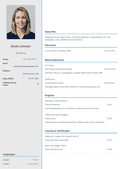
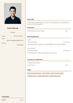
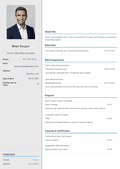
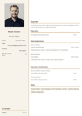
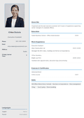
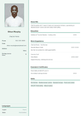
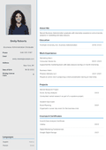
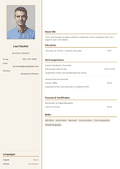
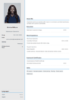
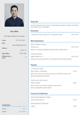
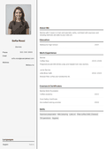
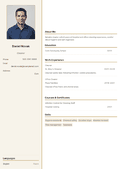
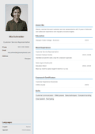
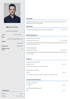
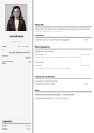
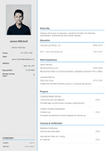
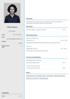
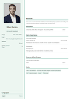
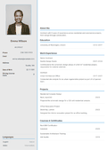
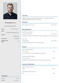
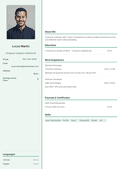
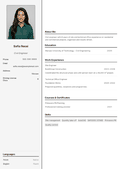
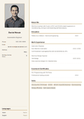
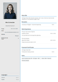
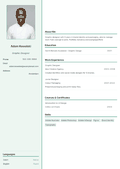
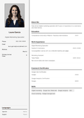
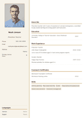
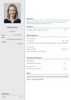
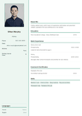
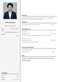
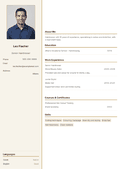
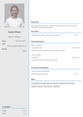
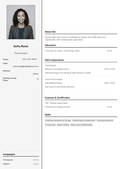
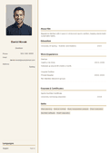
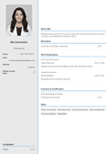
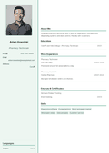
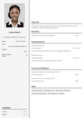
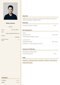
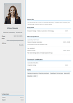
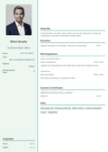
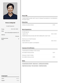
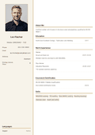
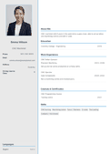
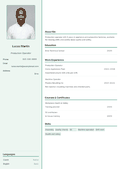
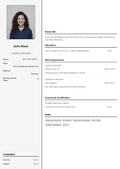
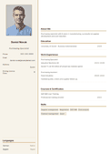
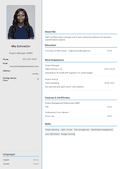
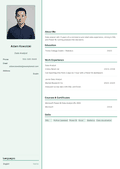
This profession isn't listed yet. For a general CV, see the New Graduate or Student example.
✨ Create the right CV for your profession now!
Create Your CV With MobilCV